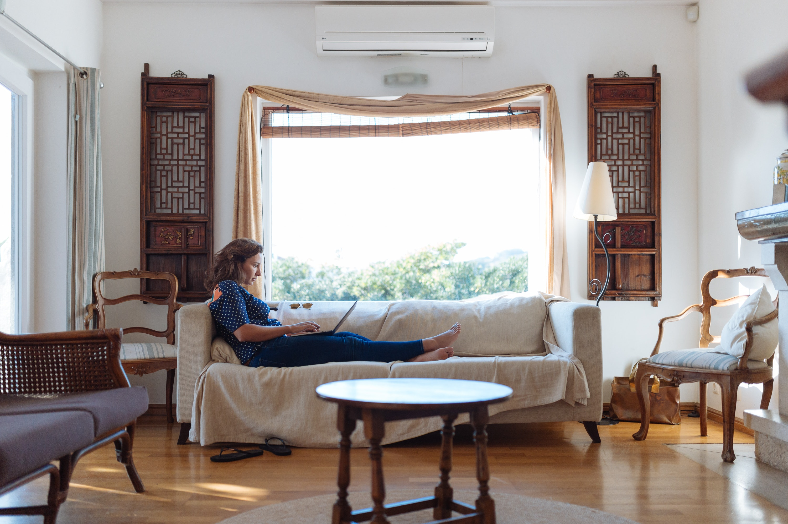

From Mirabello Interiors
It’s only natural to want your home to look and feel it’s absolute best — and there’s something incredibly
thrilling about size-challenged decorating that really forces you to get creative.
But in such modest proportions, designing a tiny living room can be a minefield. You’ll obviously make tons of
mistakes along the way — but when decorated well using a few simple tricks, small living rooms can look seriously
stylish.
So, we’ve rounded up some of our go-to upgrades, alongside inspirational interior images, to help you decide the
best ways to expand your square footage without any demolition; and make your space feel large enough to serve all
your entertaining and lounging dreams
"Size is not measured in square feet; hence the best living room designs are those that balance the use of limited space, smart storage and functional furniture."
Choose a rug large enough to visually set apart the floated sitting area from the room’s other functions. A rug is both functional and stylish, but more importantly, it anchors a space and provides a stage for furnishings. Unlike small rags, a large size gives a small space a sense of structure while also providing an illusion of additional length and width. Just make sure it’s big enough to accommodate all legs of furniture, so it doesn’t give the illusion of shrinking space.

Blooming perennials and leafy beauties like fern and spider plants are perfect for blurring the lines between indoors and outdoors. Like wallpapers and decorative accents, plants can effortlessly at color, texture, and depth to a small living room. Get creative with how you add them to your space — hang lush greenery as to not take up any precious floor space and allow them to fool the eye into thinking there is more to the room than there really is.

When you don’t have a ton of room to play with, you may want to keep things simple… but simply doesn’t mean boring. Since this is the spot where we spend most of our time, it’s important to imbue the room with décor elements that reflect your personality and taste. Start off by mixing vibrant colors, varying textures, and patterns to keep things fresh and lively; and infuse a few neutral elements to keep the scheme of things from feeling overdone. A mix of metallic finishes, sentimental knickknack or personal artwork injects a sophisticated flair into a small space.

Mirrors make a boxed-in room feel open and airy, especially when placed strategically. For dramatic impact, opt for multiple mirrors to reflect any and all light available in the living room. If you place a large or multiple pieces on the adjacent wall to your biggest window, all the better — the mirror will reflect the most light and add depth all at once. However, if you have a tiny living room that’s short on windows, try placing a tall mirror behind furniture to create the visual impression of another room opening up beyond.